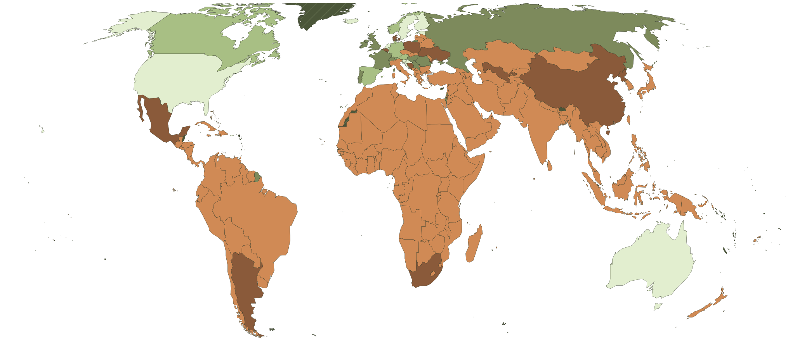

Frost dates and growing weather
Get this answer by email once a month
Milpa keeps your email address, this place, your language, the page you signed up on, when you confirmed and the month of the last note sent. None of it is linked to an account, and stopping the note deletes it. To limit sign-ups, a coded form of your network address is kept for a day. Privacy

Frost dates for 376 US weather stations and 454 cities in 110 countries.
The dates are odds
In half of years it still frosts after the median date, so every page with a frost date shows a safer date beside it. Each US station’s page also gives its summer heat and rain, month by month.
In the United States Around the world
In the United States
Each station’s own 30-year NOAA record, for the stations that serve the most ZIP codes.
Alabama
American Samoa
Arizona
Arkansas
California
- Anaheimfrost is rare
- Auburnlast frost around February 25
- Avalon Catalina Airportfrost is rare
- Burbank Glendale Pasadena Airportfrost is rare
- Carlsbad Palomar Airportfrost is rare
- Chula Vistafrost is rare
- Culver Cityfrost is rare
- Elsinorelast frost around January 28
- Fresno 5 NElast frost around January 30
- Fullerton Municipal Airportfrost is rare
- Getty Centerfrost is rare
- Hawthorne Municipal Airportfrost is rare
- Lake Arrowheadlast frost around May 5
- Livermorelast frost around February 15
- Lodilast frost around February 9
- Long Beach Daugherty Fieldfrost is rare
- Los Angeles Dwtn Usc Campusfrost is rare
- Mt Hamiltonlast frost around May 3
- Oakland Metro International Airportlast frost around January 7
- Oakland Museumfrost is rare
- Oxnardfrost is rare
- Sacramento 5 ESElast frost around January 12
- San Diego Montgomery Fieldfrost is rare
- San Francisco Oceansidefrost is rare
- Santa Ana Fire Stnfrost is rare
- Santa Monica Municipal Airportfrost is rare
- Santa Monica Pierfrost is rare
- Shelter Cove Aviationfrost is rare
- Skyline Ridge Preservelast frost around March 21
- Torrance Airportfrost is rare
- Tustin Irvine Ranchfrost is rare
- U C L Afrost is rare
- Vistafrost is rare
- Woodland 1 WNWlast frost around February 7
- Woodland Hills Pierce Collegelast frost around January 24
- Wrightwoodlast frost around May 16
Colorado
Connecticut
Florida
- Bahia Honda State Parkfrost is rare
- Fort Lauderdale Executive Airportfrost is rare
- Fort Myers Page Field Airportfrost is rare
- Gainesville Regional Airportlast frost around March 3
- Homestead Gen Aviation Airportfrost is rare
- Islamoradafrost is rare
- Jacksonville Naval Air Stationlast frost around February 1
- John Pennekamp State Parkfrost is rare
- Key Wfrost is rare
- Kissimmeelast frost around January 28
- Leesburg Municipal Airportlast frost around January 26
- Marco Islandfrost is rare
- Miami International Airportfrost is rare
- Naples Municipal Airportfrost is rare
- Nettles Islandfrost is rare
- Orlando Sanford Airportlast frost around January 24
- Palm Beach Gardensfrost is rare
- Sarasota Bradenton Airportfrost is rare
- St Petersburg International Airportfrost is rare
- Tampa International Airportfrost is rare
- Tarpon Springs Sewage Pltlast frost around January 20
- West Palm Beach International Airportfrost is rare
Georgia
Hawaii
- Hawaii Vol NP HQfrost is rare
- Kapaka Farm 904.1frost is rare
- Ke-Ahole Point 68.13frost is rare
- Kihalani 132.5frost is rare
- Kilaueafrost is rare
- Kula Branch Stn 324.5frost is rare
- Mahaulepu 941.1frost is rare
- Makawelifrost is rare
- Molokai Airportfrost is rare
- Opihihale #2 24.1frost is rare
- Paauilofrost is rare
- Poamoho Exp Fm 855.2frost is rare
- Puu Manawahua 725.6frost is rare
- Puu-O-Hoku Ranch 542.1frost is rare
- Puukohola Heiau 98.1frost is rare
- Puukolii 457.1frost is rare
Illinois
- Aledolast frost around April 22
- Auroralast frost around April 19
- Belleville SIU Rschlast frost around April 12
- Carbondale Southern Il Airportlast frost around April 9
- Carlinvillelast frost around April 14
- Chicago Botanic Gardenlast frost around April 26
- Chicago Midway Airportlast frost around April 11
- Chicago Northerly Islandlast frost around April 10
- Congerville 2 NWlast frost around April 21
- Danvillelast frost around April 21
- Decatur Airportlast frost around April 16
- Grand Chain Damlast frost around April 3
- Harrisburglast frost around April 7
- Hennepin Wtr Trmt Pltlast frost around April 24
- Hillsborolast frost around April 13
- Lisle-Morton Arboretumlast frost around April 28
- Mc Henry WG Stratton L&Dlast frost around May 1
- Park Forestlast frost around April 23
- Peoria Greater Peoria Airportlast frost around April 16
- Rantoullast frost around April 21
- Rockford Greater Rockford Airportlast frost around April 24
- Springfield #2last frost around April 15
Indiana
Iowa
Kansas
Kentucky
Louisiana
Maine
Maryland
- Baltimore Wash International Airportlast frost around April 10
- Conowingo Damlast frost around April 3
- Cumberland 2last frost around April 15
- Cylburnlast frost around April 2
- Dalecarlia Rsvrlast frost around April 9
- Damascus 3 SSWlast frost around April 14
- Hagerstown Washington County Airportlast frost around April 7
- Mechanicsville 5 NElast frost around April 17
- Millers 4 NElast frost around April 19
- Patuxent River Naval Air Stationlast frost around March 29
- Royal Oak 2 SSWlast frost around April 1
- Salisburylast frost around April 3
- Upper Marlboro 3 NNWlast frost around April 9
Massachusetts
- Belchertownlast frost around May 3
- Beverlylast frost around May 4
- E Warehamlast frost around April 21
- Hinghamlast frost around April 25
- Jamaica Plainlast frost around April 19
- Lawrencelast frost around April 13
- Lenox Dalelast frost around May 7
- Rowe 3 NElast frost around May 14
- Tully Lakelast frost around April 25
- West Medwaylast frost around April 30
- Westfield Barnes Municipal Airportlast frost around May 3
- Worcester Regional Airportlast frost around April 23
Michigan
- Dearbornlast frost around May 1
- Detroit City Airportlast frost around April 21
- Greenville 2 NNElast frost around May 18
- Grosse Pointe Farmslast frost around April 29
- Jackson Reynolds Fieldlast frost around May 1
- Kent City 2 SWlast frost around May 14
- Linden Wastewater Treatment Plantlast frost around May 3
- Pontiac Wastewater Treatment Plantlast frost around April 26
Minnesota
Mississippi
Missouri
Nebraska
New Hampshire
New Jersey
- Boonton 1 SElast frost around April 17
- Freehold-Marlborolast frost around April 17
- Harrisonlast frost around April 4
- Indian Mills 2 Wlast frost around April 28
- Long Branch-Oakhurstlast frost around April 9
- Millville Municipal Airportlast frost around April 24
- Phillipsburg-Easton Brglast frost around April 18
- Plainfieldlast frost around April 11
- Somerville Somerset Airportlast frost around April 26
- Sussex 3 WNWlast frost around April 30
- Teterboro Airportlast frost around April 3
- Trenton State Collegelast frost around April 17
- Wanaque Raymond Damlast frost around April 19
New York
- Albany Airportlast frost around April 27
- Aurora Rsch Farmlast frost around May 1
- Binghamtonlast frost around May 2
- Brewerton Locklast frost around May 4
- Bronxlast frost around April 1
- Buffalolast frost around April 24
- Cherry Valley 2 NNElast frost around May 6
- Colden 1 Nlast frost around May 7
- Delanson 2 NElast frost around May 7
- Delhi 2 SElast frost around May 19
- Dobbs Ferry-Ardsleylast frost around April 20
- E Jewettlast frost around May 20
- E Sidneylast frost around May 11
- Elmira Corning Regional Airportlast frost around May 9
- Glens Falls Farmlast frost around May 17
- Gouverneur 3 NWlast frost around May 14
- Hudson Correctional Facilitylast frost around April 25
- Islip Li Macarthur Airportlast frost around April 10
- Liberty 1 NElast frost around May 9
- Millbrook 3 Wlast frost around May 4
- Mohonk Lakelast frost around April 21
- Morrisville 6 SWlast frost around May 6
- New York Cntrl Pk Twrlast frost around March 30
- New York Laguardia Airportlast frost around March 26
- Oceansidelast frost around April 7
- Rochester Greater International Airportlast frost around April 24
- Shirley Brookhaven Airportlast frost around April 18
- Syracuse Hancock International Airportlast frost around April 29
- Utica Oneida County Airportlast frost around May 1
- Warsaw 6 SWlast frost around May 7
- Yorktown Heights 1 Wlast frost around April 25
North Carolina
Northern Mariana Islands
Ohio
- Akron Canton Regional Airportlast frost around April 24
- Caldwell 3 SElast frost around April 30
- Cheviot 3 Wlast frost around April 16
- Clevelandlast frost around April 20
- Cleveland Burke Airportlast frost around April 8
- Columbus-Valley Crossinglast frost around April 23
- Dayton Mcdlast frost around April 18
- Dennison Wtr Wkslast frost around April 29
- Eatonlast frost around April 25
- Fremont Ag Stnlast frost around April 21
- Hoytville 2 NElast frost around April 24
- Lima Wastewater Treatment Plantlast frost around April 24
- Marysvillelast frost around April 19
- Milfordlast frost around April 23
- Millport 4 NElast frost around May 2
- New Lexington 2 NWlast frost around April 30
- Ravenna 2 Slast frost around April 21
- Sidney 1 Slast frost around April 27
- Stow 4 SElast frost around April 30
- Toledo Metcalf Fieldlast frost around April 20
- Wooster 3 SSElast frost around April 24
Pennsylvania
- Altoona Blair County Airportlast frost around April 23
- Beaver Falls 1 NElast frost around April 27
- Carlisle Wtplast frost around April 23
- Charleroi Locklast frost around April 13
- Confluence 1 SW Damlast frost around April 30
- Erie International Airportlast frost around April 26
- Franklinlast frost around May 2
- Johnstown Cambria County Airportlast frost around April 29
- Lancaster Airportlast frost around April 18
- Lehighton 1 SSWlast frost around April 21
- Mahanoy City 2 Nlast frost around April 30
- Mckeesportlast frost around May 2
- Mercerlast frost around May 15
- Middletown Harrisburg International Airportlast frost around April 9
- Mt Pocono Mountains Airportlast frost around May 6
- Phila Franklin Instlast frost around March 30
- Philadelphia International Airportlast frost around April 2
- Philipsburg 2 Slast frost around May 13
- Pleasant Mt 1 Wlast frost around May 14
- Prince Gallitzin State Parklast frost around May 10
- Putneyville 2 SE Damlast frost around May 10
- Rodale Rsch Centerlast frost around April 26
- Schenley Locklast frost around April 21
- Selinsgrove 2 Slast frost around April 25
- Shippensburglast frost around April 19
- State Collegelast frost around April 20
- Washington 3 NElast frost around April 24
- Wilkes-Barre International Airportlast frost around April 23
- Willow Grove Naval Air Stationlast frost around April 11
Puerto Rico
Rhode Island
South Carolina
Tennessee
Texas
- Austin 6 Slast frost around March 10
- Conroe Montgomery County Airportlast frost around March 11
- Dallas Love Fieldlast frost around March 2
- Dallas Redbird Airportlast frost around March 6
- Denton Municipal Airportlast frost around March 24
- Fort Worthlast frost around March 10
- Houston Sugarland Memlast frost around February 2
- Houston-Portlast frost around February 2
- New Braunfelslast frost around March 8
- Thompsons 3 WSWlast frost around February 15
U.S. Virgin Islands
Vermont
Virginia
- Ashland Hanover County Municipal Airportlast frost around April 10
- Big Stone Gaplast frost around April 20
- Breaks Interstate Parklast frost around April 22
- Corbinlast frost around April 14
- Fentress NAASlast frost around March 23
- Painter 2 Wlast frost around April 4
- Purcellvillelast frost around April 16
- Richlandslast frost around April 27
- Roanoke Regional Airportlast frost around April 3
- Somersetlast frost around April 17
- Viennalast frost around April 14
- W Point 2 NWlast frost around April 6
- Warrenton 3 SElast frost around April 9
- Washington Reagan Airportlast frost around March 24
Washington
West Virginia
- Beckley Va Hospitallast frost around May 6
- Burtonlast frost around May 4
- Charlestonlast frost around April 23
- Clarksburg Benedum Airportlast frost around April 18
- Gassawaylast frost around April 20
- Hamlinlast frost around April 23
- Lake Lynnlast frost around April 25
- Loganlast frost around April 8
- London Lockslast frost around April 7
- Mt Nebo 1 Slast frost around May 5
- Oceana 2 SElast frost around April 22
- Spencerlast frost around April 30
- Williamsonlast frost around April 8
Around the world
Each city’s dates come from a weather model’s daily lows, 1991 to 2020, and graded A good hunch, except at 99 cities with a weather station near them that holds 20 or more years of daily records: there the dates are that station’s own, graded Promising. Pick a country.
Every city of 1,000,000 people or more outside the US has a page here, 454 in all, by country below
Wherever the weather data reaches, the Milpa app works out the frost dates for your own garden from it.
- Afghanistan1 city
- Algeria1 city
- Angola2 cities
- Argentina3 cities
- Armenia1 city
- Australia5 cities
- Austria1 city
- Azerbaijan1 city
- Bangladesh3 cities
- Belarus1 city
- Belgium1 city
- Bolivia3 cities
- Brazil22 cities
- Bulgaria1 city
- Burkina Faso1 city
- Cambodia1 city
- Cameroon2 cities
- Canada6 cities
- Chile1 city
- China111 cities
- Colombia5 cities
- Congo1 city
- Costa Rica1 city
- Côte d'Ivoire1 city
- Cuba1 city
- Czechia1 city
- Democratic Republic of the Congo3 cities
- Denmark1 city
- Dominican Republic2 cities
- Ecuador2 cities
- Egypt3 cities
- El Salvador1 city
- Ethiopia1 city
- Finland1 city
- France4 cities
- Georgia1 city
- Germany10 cities
- Ghana2 cities
- Greece1 city
- Guatemala1 city
- Guinea1 city
- Haiti1 city
- Hong Kong1 city
- Hungary1 city
- India45 cities
- Indonesia9 cities
- Iran6 cities
- Iraq2 cities
- Ireland1 city
- Israel3 cities
- Italy5 cities
- Japan11 cities
- Jordan1 city
- Kazakhstan1 city
- Kenya1 city
- Kuwait1 city
- Lebanon1 city
- Liberia1 city
- Libya2 cities
- Madagascar1 city
- Malaysia2 cities
- Mali1 city
- Mexico10 cities
- Morocco3 cities
- Mozambique1 city
- Myanmar2 cities
- Netherlands3 cities
- New Zealand1 city
- Nigeria8 cities
- North Korea2 cities
- Pakistan10 cities
- Panama1 city
- Paraguay1 city
- Peru1 city
- Philippines4 cities
- Poland2 cities
- Portugal2 cities
- Qatar1 city
- Romania1 city
- Russia11 cities
- Saudi Arabia5 cities
- Senegal1 city
- Serbia1 city
- Singapore1 city
- Somalia1 city
- South Africa7 cities
- South Korea9 cities
- Spain3 cities
- Sudan2 cities
- Sweden1 city
- Switzerland2 cities
- Syria3 cities
- Taiwan6 cities
- Tajikistan1 city
- Tanzania1 city
- Thailand1 city
- Togo1 city
- Tunisia1 city
- Turkey6 cities
- Uganda1 city
- Ukraine3 cities
- United Arab Emirates2 cities
- United Kingdom6 cities
- Uruguay1 city
- Uzbekistan1 city
- Venezuela5 cities
- Vietnam5 cities
- Yemen2 cities
- Zambia1 city
- Zimbabwe1 city
How these frost dates work
Why a frost date is not a date
A last-frost date is really a percentile, drawn from 30 years of records at a nearby weather station. In about half of years a frost still comes after the median date. The tool above shows the median beside the 1-year-in-10 date, so you can choose how much risk to take.
Spring frost and fall freeze, side by side
Gardeners ask about both ends of the season. The last spring frost decides when it’s safe to set out a tomato. The first fall freeze decides whether what you sow in August has time to finish. Each is a range of dates, and in each the 1-in-10 date is the one to watch. In spring that’s a frost that comes late; in fall, a freeze that comes early. Enter a US ZIP code and you get both, from the same station with the same percentiles. Whichever is closer to today shows first.
Where these numbers come from
NOAA NCEI 1991–2020 U.S. Climate Normals from 4,350 weather stations. 33,047 of the 33,144 U.S. ZIP codes have a station within 80 km. Each ZIP code reads the station the Milpa planner uses for it, the nearest one, and every date is that station’s own recorded percentile, unshifted. Near a few cities the planner uses a hand-built site instead, where a station’s dates were corrected for terrain with PRISM temperature maps, and the answer says so. Nothing else in a US answer is modeled or averaged. It is the same committed table behind every location page on this site, read a second way. A city abroad, typed by name, has no NOAA normals station to read. Where a station in NOAA’s GHCN-Daily records stands within 25 km of it, with 10 or more winters on record, whether frost is rare or comes in some or most winters is that station’s own count, and the answer names the station. Where one of them has 20 or more years of daily lows recorded in full, the city’s frost dates are that station’s own too, and the answer names it. Elsewhere a city’s frost dates come from a weather model’s daily lows. Either way they are graded and credited as the city’s own frost page credits them.
Frost counts and dates from GHCN-Daily, version 3.35-upd-2026101817, NOAA National Centers for Environmental Information, cited as NCEI asks: Menne, Matthew J., Imke Durre, Bryant Korzeniewski, Shelley McNeill, Kristy Thomas, Xungang Yin, Steven Anthony, Ron Ray, Russell S. Vose, Byron E.Gleason, and Tamara G. Houston (2012): Global Historical Climatology Network - Daily (GHCN-Daily), Version 3. Daily minimum temperature (TMIN), stations outside the United States, 1991-2020. NOAA National Climatic Data Center. doi:10.7289/V5D21VHZ. Accessed 2026-10-20.
What this tool will not do
It won’t call a weather service, guess a number for a ZIP with no station near it, or tell you your hardiness zone. The zone answers a different question, which perennials survive your winter, and it can’t tell you when to sow. This tool gives frost odds from records, or says it can’t.
When do I plant? · Where the dates come from
More ways Milpa can help
When do I plant? · What grows well together? · What can I plant now? · Something wrong in the garden? · Heard a tip?
With a free account: Plan your garden · Keep a garden diary